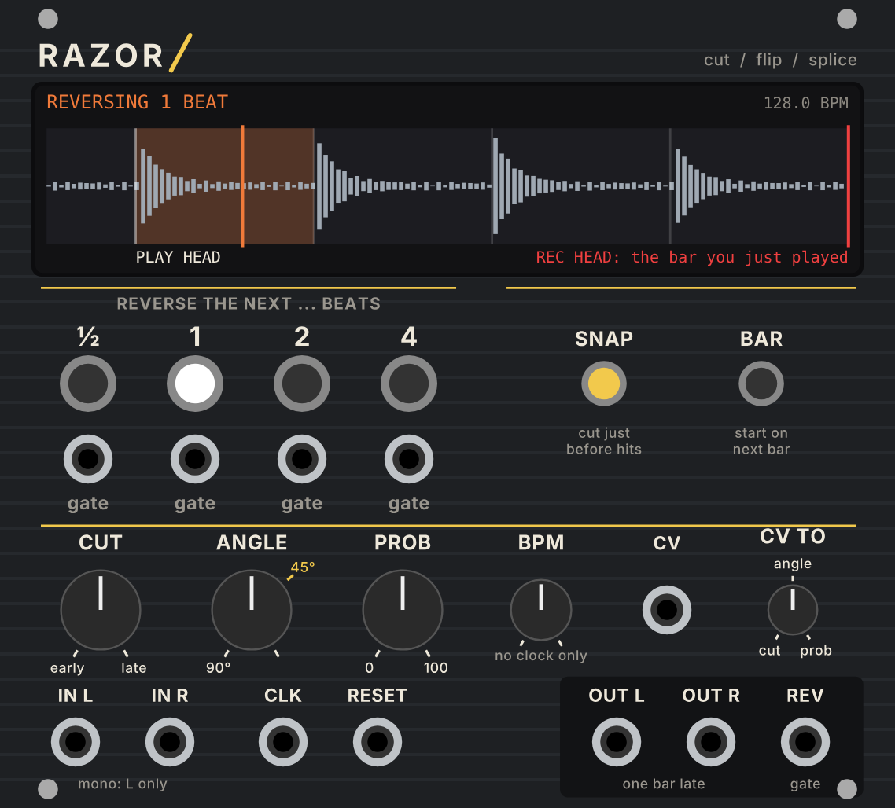
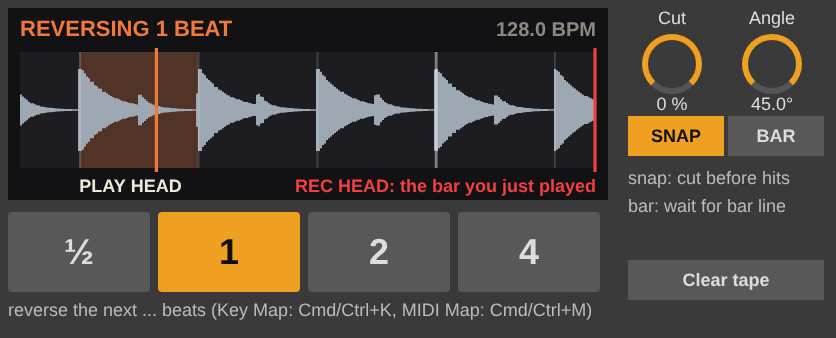
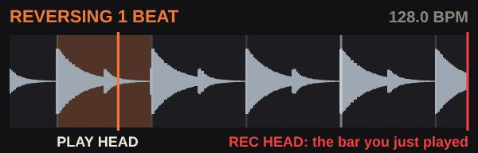

On tape, a reverse edit means cutting a piece out, turning it end for end and splicing it back in the same place. Razor does that to a running stream of audio, live.
Most reverse effects flip the audio you have just heard, so the material repeats. A tape editor flips the piece that is about to play, and the music carries on in time afterwards. To do that live, the "about to play" audio has to exist already. So Razor works like a tape loop with the record head one bar (4 beats) ahead of the play head.
That bar of tape between the heads is the "future" Razor can edit. Press ½, 1, 2 or 4 and that many beats are played backwards from the next beat. Then the play head jumps to where it would have been anyway.
The lag is fixed at exactly 4 beats, even if you only use the short lengths. It's easier to play against a delay of a whole bar than against part of one: what you hear is always the bar you just played, on the same beat.
The reversed piece takes the forward piece's place. When it ends, the forward stream comes back exactly where it would have been. Nothing repeats, nothing is lost, and you stay on the grid. This is the real tape edit.
The reversed piece is added: after it, the tape carries on from the start of B, so the stream falls behind the grid by the length of the piece. Razor then runs the tape slightly fast (varispeed) until it's back to exactly one bar late. You hear a small, gradual pitch rise as it catches up: the tape op's "fix it with varispeed" sound.
INSERT is in the VCV module only. The Live device always splices in place. The catch-up speed is in the VCV right-click menu: Gentle 2% (about ⅓ semitone), Medium 6% (about 1 semitone) or Fast 12% (about 2 semitones). At 6%, catching up a 1-beat insert takes about 17 beats.
Press a length while a reverse is playing and it's queued: it starts the moment the current piece ends (in INSERT mode, on the next beat after it). The light blinks while a press is waiting and stays on while it plays.
With the cuts exactly on the grid, each kick's sharp hit still lands on a beat after the flip. But the flip turns the hit into the end of the sound: you hear its tail first as a swell, and the punch at the end. The energy arrives in the wrong part of the beat, even though the peak is technically on the grid. Kicks that start a few milliseconds after the clock, which is common with analogue drums, get pushed further off.
On real tape the splice point is the cut, so moving the razor moves both. CUT slides both edges of the piece earlier or later than the grid, up to ⅛ beat, in the tape and in when you hear it. The forward stream still comes back on the grid.
Because Razor always holds a whole bar that you haven't heard yet, it can look at it first. With SNAP on, it finds the hit nearest each cut edge (within ⅛ beat) and puts the razor 2 ms before it. Cuts never land in the middle of a kick, and each reverse is placed by its own hits, without you setting the knob. CUT then becomes a fine offset from the snapped point. A tool that can only see the past can't do this.
A razor block has slots at different angles. A 90° cut is a hard butt splice; an angled cut crosses the tape over a short time, which works like a crossfade. ANGLE uses the real numbers for ¼" tape running at 15 inches per second:
45° is the default and is marked on both panels. The crossfade starts at each edge, so the timing of the splice doesn't move.
28 HP. Drop Razor-2.0.0-mac-arm64.vcvplugin into your Rack 2 plugins folder and restart Rack. Patch audio into IN L (and IN R for stereo), patch a clock into CLK or set BPM, and take OUT L / OUT R to your mixer.
| Control | What it does |
|---|---|
| ½ / 1 / 2 / 4 | Reverse that many beats, starting at the next beat (or bar with BAR). Buttons always fire. |
| gate jacks | One under each button: the same as pressing it, for DROID, Marbles, a sequencer… Each gate is checked against PROB first. |
| SNAP | Cut 2 ms before the nearest hit (see section 3). |
| BAR | Start on the next bar line, not the next beat. Patch RESET so Razor knows where your bar starts. |
| INSERT | Add the piece, then catch up with varispeed (see section 2). |
| CUT | Move both cuts up to ⅛ beat earlier (CCW) or later (CW). |
| ANGLE | Splice crossfade, 90° to 22.5°; yellow mark = 45°. |
| PROB | The chance that a gate reverses (0–100%). Buttons ignore it. |
| BPM | Tempo when nothing is patched to CLK. |
| CV + CV TO | One CV input, aimed at cut, angle or prob with the small CV TO knob. Cut: ±5 V sweeps the whole range. Angle and prob: 0–10 V adds to the knob. |
| Jack | |
|---|---|
| IN L / IN R | Audio in. Mono: patch L only. |
| CLK | Clock; the green light flashes on each beat. A big tempo change jumps straight to a bar of the new tempo; small drift is followed with varispeed. |
| RESET | The next beat is the first of a bar (for BAR). |
| OUT L / OUT R | The tape: one bar late, with the splices. |
| REV | 10 V while a reversed piece plays. The red light shows the same. |
Right-click menu: clock pulses per beat (1, 2, 4, 24), INSERT catch-up speed, and Clear the tape.

Razor.amxd and razor_display.js in the same folder, for example User Library/Presets/Audio Effects/Max Audio Effect/. The .js file draws the display.Razor.amxd onto a track, group or the master. (Optional: open it in Max and press Freeze Device to make one file that carries everything.)| Master, group or a bus of the whole mix | Nothing to fix: everything is a bar late together, so you won't notice. This is the easiest way to use it on a finished mix. |
| A single track | That track lands a bar behind the rest. Either drag its clips one bar earlier, or group it with everything it has to stay in time with and put Razor on the group. |
Razor follows Live's tempo and transport by itself. Reverses only fire while Live is playing, because they wait for the next beat. It assumes 4/4.
The four big buttons are ordinary Live parameters, so Live's own mapping drives them:
Cmd/Ctrl+M does the same for MIDI pads or a keyboard. SNAP, BAR and Clear tape can be mapped too. The buttons can also be automated in the Arrangement, so you can write reverses into the song.
The Live device has no INSERT mode (every splice goes back in place) and no PROB or CV input: Live's automation, clip envelopes and Follow Actions do that job.
| ½ / 1 / 2 / 4 | Reverse that many beats from the next beat (or bar). |
| Cut | −100% to +100% = ⅛ beat earlier to ⅛ beat later. |
| Angle | Splice angle in degrees, 22.5–90. Default 45°. |
| SNAP · BAR | As on the VCV module. |
| Clear tape | Silence the whole tape (for example after a break). |

Both versions show the same thing: the tape between the heads, scrolling left as it plays.
| Status (top left) | FORWARD; ARMED 2 BEATS: next beat while a press waits; REVERSING 1 BEAT while a piece plays (with "(insert)" in INSERT mode). VCV also shows "gate skipped (PROB)". |
| Top right | The tempo. After an INSERT: "catching up +6.0% +312 ms", meaning how fast the tape is running and how far behind the grid it still is. |
| White line, left | The play head: what you hear. Half a beat of already-heard tape is shown to its left. |
| Red line, right | The record head. Everything between the two lines is the bar you just played. |
| Vertical lines | Beats; bar lines are brighter. |
| Yellow outline | Where an armed reverse will cut. |
| Orange box | The piece being reversed. The play head turns orange and runs backwards through it. |
| Small top ticks (VCV) | The hits Razor has found; yellow when SNAP is on. |
Razor is built for loop fatigue: small, timed edits that keep a loop moving without leaving the grid.
| Material | SNAP | CUT | ANGLE |
|---|---|---|---|
| Drums, tight | On | 0 to slightly CCW | 60–90° |
| Full mix | On | 0 | 45° |
| Pads, chords | Off | 0 | 22.5–35° |
| Glitchy edits | Off | CV / random | 90° |
That's the trick that makes it work: the bar between the heads is what Razor edits. Put it somewhere where a bar of delay doesn't matter (the master or a group in Live, or after everything that needs to stay in sync in VCV).
Your clock sends 16ths. Set Clock pulses per beat to 4 in the right-click menu.
That's the catch-up: the tape runs fast until it's one bar late again. Use Gentle for a barely audible drift, or Fast to get back quickly.
No. It's always exactly one bar, on purpose: it's easiest to play against, and it's long enough for every length.
Razor counts 4 beats to a bar. In Live it follows the tempo but assumes 4/4.
src/RazorEngine.hpp (VCV) and m4l/razor.genexpr (gen~). Both pass the same 10 offline tests.